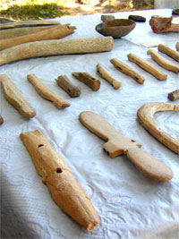

"МЁРТВЫЕ ЖЕ СРАМА НЕ ИМУТ..."
[16 МАЯ 2006г.]
В замечательном памятнике нашей древней истории "Повести временных лет" в статье под 971 годом рассказывается о том, как Святослав Игоревич, взяв Переяславец, объявил грекам: иду на вашу столицу (Константинополь). На это обращение греки (византийцы), пытаясь обмануть Святослава, сказали, что они не могут сопротивляться и хотят выплатить дань по числу его войска. Святослав, удвоив число войска, сказал: "Нас двадцать тысяч". И выставили греки против Святослава сто тысяч и не дали дани. И когда русские увидели их, то сильно испугались. Но сказал Святослав воинам: "Нам некуда уже деться, хотим мы или не хотим - должны сражаться. Так не посрамим земли Русской, но ляжем костьми, "мертвые бо срама не имамъ". Если же побежим - позор нам будет. Так не побежим же, но станем крепко, а я пойду впереди вас: если моя голова ляжет, то о своих сами позаботьтесь". И ответили воины: "Где твоя голова ляжет, там и свои головы сложим". И исполчились русские, и была жесткая сеча, и одолел Святослав, а греки бежали.
Этот почти дословный перевод с древнерусского языка приведен мною для того, чтобы напомнить нам всем о том, как наши предки, еще язычники, совестливо относились к своей земле, к родине, к чести. А сам по себе рассказ в летописи говорит о том, что предки наши глубоко уважали историю своей родины, гордились ею и готовы были за нее жизнь отдать. А как мы, николаевцы, сегодня относимся к истории своей родной земли?
Мировая культура давно уже выработала непреложное правило, если аргументированно высказывается предположение о каком-либо неизвестном памятнике истории и культуры, то этот памятник немедленно берется под охрану мировой общественности и государства, на территории которого он находится. В нашем законодательстве такие памятники называются вновь выявленными, и они должны охраняться так же, как и утвержденные. В прошлом году нашими археологами Ю.С. Гребенниковым и К.В. Горбенко был завершен цикл раскопок в Диком Саду, примыкающем к Лагерному полю, после которого всему ученому миру стало ясно, что сделано крупное открытие. В своем кратком "Заключении об археологическом памятнике "Дикий сад", расположенном в г. Николаеве", д.и.н., проф., зам. директора НИИ охраны памятников, чл.-корр. Немецкого археологического института В.И. Клочко писал следующее:
"Археологічна пам'ятка "Дикий сад" є городищем пізньої бронзи (белозерський період, 1300-900 рр. до н.е.). Розташована вона на високому березі Південного Бугу, в місті впадіння в нього річки Інгул. Місце розташування пам'ятки та деякі знахідки на ній дозволяють інтерпретувати її як залишки давнього міста-порту, розташованного на торгівельному шляху, який пов'язував через річки Західний Буг та Південний Буг басейни Чорного та Балтійського морів.
Тож, городище Дикий Сад є єдиною, що зберіглась в Україні, археологічною пам'яткою - залишками чорноморського міста-порту часів легендарної Трої та самої Троянської війни.
Те, як збереглися на цій пам'ятці залишки жител, храмів та оборонних споруд, дозволяє цілком впевнено музеєфікувати та реконструювати ці споруди та загальний вигляд міста в цілому. Усі перераховані вище обставини висувають городище Дикий Сад в ряд найвидатніших пам'яток загальноєвропейскої археологічної спадщини та спонукають задуматись над необхідністю збереження і музеєфікації цієї видатної пам'ятки. Музеєфікація ж дозволить поставити її в ряд видатних пам'яток світової культурної спадщини".
Ю.С. Гребенников и К.В. Горбенко пишут, что за 15 лет изучения памятника археологической экспедицией исторического факультета Николаевского госуниверситета им. В.А. Сухомлинского, в последнее время и Николаевского института Одесского национального университета, было исследовано 19 археологических объектов (в т.ч. храмы и часть оборонительной стены со рвом и переходным мостиком через него), 15 помещений разного функционального назначения и найдено несколько тысяч артефактов (искусственно сделанных предметов) того времени. Глубина культурного слоя колеблется от 0,15 до 0,5 м, а общая площадь достигает около 3 га. Опираясь на установленные факты, исследователи отмечают, что "вполне правомерно утверждать, что городище "Дикий сад" и есть тем центром - "городом людей киммерийских", о которых говорит в "Одиссее" Гомер". От себя добавлю, что продолжение раскопок может принести новые открытия, ибо пока что изучена меньшая часть территории этого уникального памятника. К сожалению, непрерывного финансирования работ в необходимом объеме сегодня практически нет, а на одном энтузиазме далеко не уйдешь. Кроме того, существует реальная угроза проведения строительства на территории Дикого сада. Более того, археологи, раскопав ряд ритуальных помещений, вместо их музеефикации, т.е. восстановления исходного вида, вынуждены были засыпать их землей снова, дабы они сохранились...
Итак, мы имеем археологический памятник-городище мирового значения на территории города Николаева, который старше Ольвии, подумать только, более чем на полтысячелетия! Но исторической ценности этого установленного факта никак не может осознать наша городская община, чтобы встать на его защиту. Впрочем, и городской общины у нас как таковой не имеется. Руководители города, часто употребляя этот термин, подразумевают под ним депутатов горсовета, имея в виду их выборность населением. Но укажите мне хоть одного депутата, который разбирался бы в истории нашего города и знал бы ей цену так, например, как Ю.С. Крючков, Н.А. Кухар-Онышко и др., а уж об археологии и говорить не приходится.
Три года назад мною была сделана попытка в одиночку отстоять и защитить от застройки Лагерное поле, к которому примыкает этот уникальный памятник. Дело в том, что на территории нашего полуострова, по-видимому, существовало два киммерийско-скифских города, аналогичных открытому ныне. Основания для этого предположения можно найти у Гомера в описании щита Ахилла в "Илиаде", где он говорит о двух городах, а также у Помпония Мелы, указавшего их названия - Ольвиополис и Борисфенида. Из "Хроники" Евсевия следует, что город Борисфенида или Борисфен был основан на сто лет раньше Ольвии, около 647 г. до н.э., а это говорит о том, что он был киммерийско-скифским городом, в котором, вероятно, оседали приплывавшие сюда греки, постепенно превратившие его в древнегреческое поселение. Подтвердить это предположение или опровергнуть можно только после проведения обстоятельных археологических исследований территорий Лагерного поля, Дикого Сада, судостроительного завода им. 61 коммунара, речпорта и яхт-клуба, где археологи уже обнаружили следы античной культуры. О важности решения этого вопроса говорить не приходиться, поскольку в 2001 г. мною было высказано предположение о том, что в одном из этих двух киммерийско-скифских городов, расположенных на земле Николаевского полуострова, родился Гомер (см. мои книги: "Гомер. Имманентная биография", Николаев, "АТОЛЛ", 2001; "Город Святого Николая (Древнейшая история)", "Возможности Киммерии", 2002 и "Экзампей", "Возможности Киммерии", 2005). Перед началом сессии мною была роздана депутатам горсовета справка об исторической ценности этого места. И что вы думаете, обращение поддержали только 5% депутатов, остальные без зазрения совести проголосовали за застройку Лагерного поля!
А ведь придет время, когда о нашем городе узнает весь мир и устремится в Николаев только потому, что на земле его был киммерийский город, в котором родился основатель европейской культуры Гомер, и вот тогда-то вспомнят поименно всех, кто уничтожал память и памятники, которым нет цены.
А пока археологи пытаются защитить свое открытие. В сентябре 2004 г. через Институт археологии НАН Украины, под патронатом которого они работают, зав. отд. института, д.и.н. В.В. Отрощенко обратился к городскому голове В.Д. Чайке, в письме говорится: "Відділ археології енеоліту-бронзового віку Інституту археології НАН України пропонує взяти городище "Дикий Сад" в м. Миколаїв на облік як пам'ятку державного значення і заборонити будь-які ненаукові роботи в її зоні". Такое же письмо пошло и в адрес главы Николаевской облгосадминистрации А.В. Садыкова, в нем излагается просьба и предложение: "припинити будь-які ненаукові роботи в зоні пам'ятки, продовжити її розкопки та провести музеєфікацію. За цих умов "Дикий Сад" може стати перспективним об'єктом туризму".
Поскольку земля, на которой находится этот уникальный памятник, находится в ведении города, то управление культуры облгосадминистрации обратилось с письмом к городским властям. В ответе № 22812 от 18.07.05 г. зав. отделом культурного наследия горисполкома И.А. Бондаренко читаем:
"Цим повідомляю, що на цей час частина території пам'ятки археології "Поселення "Дикий Сад" відповідно до рішення міської ради від 21.11.02 №7.12 продана ТОВ "Южний офтальмологічний центр"... і на право власності на землю виданий Державний акт від 03.09.03 МК №072741. На цей час керівником зазначеного товариства є Пузис Марк Борисович. Та частина пам'ятки, яка зараз досліджується, була зарезервована для виконання проектно-вишукувальних робіт для будівництва УСБ України в Миколаївській області багатоповерхових житлових будинків рішенням міської ради: - від 12.12.03 №17/6 - 5000 кв. м на один рік (п. 1.15); - від 21.05.04 №20.19 - 1200 кв. м строком до 01.05.05 (п. 1.9). Рішень про продовження терміну резервування або зміни цільового призначення не приймалося". Далее сообщается о том, что музеефикацию памятника "Дикий Сад" было бы рациональнее выполнить в составе областного краеведческого музея.
Руководство Николаевского госуниверситета обратилось письмами в адрес Президента Украины В.А. Ющенко (№ 01.1285 от 31.10.05 г.), Премьер-Министра Украины Ю.И. Еханурова (№ 01.1282 от 28.10.05 г.) и Президента Украинского общества охраны памятников истории и культуры акад. П.П. Толочко (№ 01.1283 от 28.10. 05 г.), в которых говорится следующее.
"Земельна ділянка, на якій розташована пам'ятка, всупереч вимогам Законів України "Про охорону культурної спадщини" та "Про археологічну спадщину" у 2002 році була передана під забудову, подання Інституту археології НАН України про надання пам'ятці статусу національної Міністерством культури і туризму навіть не розглядалося. До цього часу завдяки спільним зусиллям науковців Інституту археології НАН України, Миколаївського державного інституту імені В.О. Сухомлинського, Миколаївського інституту Одеського національного університету та громадських організацій будівельні роботи не проводилися, втім існує загроза їх активізації.
Виконання будь-яких ненаукових робіт у зоні пам'ятки до завершення розкопок призведе до повної руйнації цього унікального об'єкту. Однак за умови збереження та музеєфікації археологічної пам'ятки "Дикий Сад" існуватиме можливість її перетворення на історико-культурний музей-заповідник - унікальний науковий, культурний, освітній і туристичний об'єкт України.
Просимо Вашого сприяння в розгляді питання про включення унікального історико-археологічного об'єкту "Дикий Сад" до Державного реєстру пам'яток історії та культури як пам'ятки національного значення".
Как видим, в таком важнейшем деле, как сохранение суперважного для нас памятника "Дикий Сад", имеющего не только национальное, но и мировое значение, вопрос освобождения земли для продолжения археологических исследований и разворачивания работ по музеефикации остается не решенным ни городскими, ни областными властями. Понятно, последние полгода все были заняты выборами. Но, может быть, теперь городской голова В.Д. Чайка и губернатор А.В. Садыков обратят внимание и возьмут под личный и действенный контроль решение этого важного вопроса? Кроме того, нужно, чтобы народные депутаты Украины от Николаевской области (например, лидер Партии регионов Н.П. Круглов), подняли в парламенте и поставили перед Кабинетом Министров вопрос о включении историко-археологического объекта "Дикий Сад" в Государственный реестр памятников истории и культуры как памятника национального значения.
По-моему, в решении этого важнейшего для нашего города и края вопроса настало то самое время, когда областным, городским властям и общественности нужно постоять за родную землю. Национальная Академия наук - на нашей стороне. Копии цитированных выше писем были присланы мне, как представителю общественности, из Института археологии НАНУ. Надеюсь, что Александр Валериевич Садыков, Владимир Дмитриевич Чайка и Николай Петрович Круглов сделают все от них зависящее, чтобы сохранить уникальный памятник археологии и истории "Дикий Сад", найдут средства для продолжения раскопок и общими усилиями помогут его музеефицировать.
Двадцать городов Древней Греции спорили и продолжают сегодня спорить о том, что Гомер был их выходцем. Нам, николаевцам, будет стыдно, если мы за повседневной суетой не сохраним для наших потомков город, в котором, возможно, родился основатель европейской культуры. "Мертвые же срама не имут", а живые?..
А.Золотухин,
председатель Пушкинского клуба.